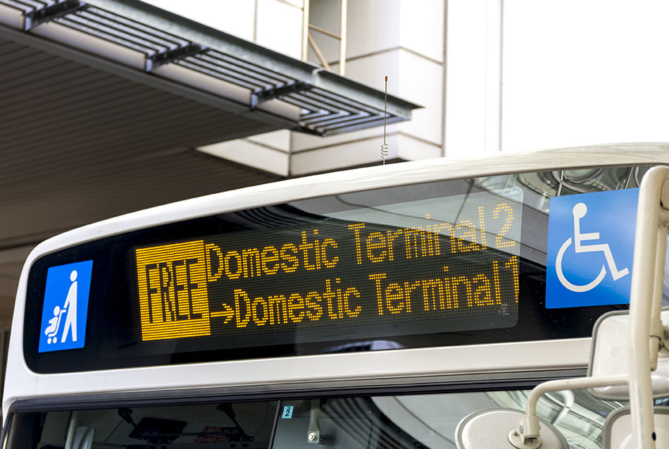

Durante gran parte de su historia reciente, el Aeropuerto de Haneda –oficialmente el Aeropuerto Internacional de Tokio– se utilizaba principalmente para vuelos nacionales dentro de Japón, pero la situación cambió con la apertura de la nueva terminal internacional
(la Terminal 3) en 2010. Ahora, Haneda es, con mucho, el aeropuerto más práctico para llegar a Tokio. Las tres terminales nacionales cuentan con rutas de vuelo por todo Japón y a todo el mundo. El Aeropuerto de Haneda se encuentra
entre los aeropuertos con mayor tráfico aéreo del mundo. Haneda tambien ha sido objeto de reformas en los últimos años que han atraído a excelentes tiendas, restaurantes y otras atracciones, y el aeropuerto está siendo cada
vez mejor. *Las instalaciones asociadas a los vuelos internacionales en la Terminal 2 no están en funcionamiento en la actualidad.
GUÍA del PASAJERO
Haneda es mucho más que un aeropuerto; por sí mismo también es un destino fascinante, con gran abundancia de comida, tiendas y atracciones. Los amantes del aire pueden disfrutar en los miradores, recorrer las instalaciones de Japan Airlines e incluso
pasar la noche en un hotel con “cabinas de primera clase”. Cerca del aeropuerto, el Parque Jonanjima Seaside es un lugar agradable para pasear por la bahía de Tokio e incluso para el camping.
El aeropuerto de Haneda fue inaugurado en 1931. Durante los años 1930, aterrizaban vuelos para Japón y Manchuria. En 1945, debido a la ocupación estadounidense por la Segunda Guerra Mundial, el aeropuerto fue renombrado como Haneda
Army Air Base (Base aérea del Ejército Haneda). Como base militar, Haneda recibió los primeros vuelos internacionales en 1947, cuando se comenzaron a establecer servicios con Estados Unidos, Corea, China y las Filipinas. Japan
Airlines comenzó a operar de forma local desde Haneda en 1951. El gobierno de los Estados Unidos devolvió parcialmente el aeropuerto en 1952, pasando a ser parte del Aeropuerto Internacional de Tokio. La totalidad del aeropuerto
fue devuelta en 1958. Los controles de radares y la Torre de control comenzaron a estar operativos en el año 1961. En 1964, el monorraíl de Tokio comenzó a operar entre Haneda y el centro de Tokio, para las Olimpiadas de Tokio.
Durante ese año, Japón impuso restricciones de ingreso a los pasajeros en tránsito, originando que el desplazamiento en el aeropuerto fuera caótico. Durante 1970 se terminaron la pista nueva y la zona internacional, pero la demanda
siguió creciendo.
El Aeroupuerto Internacional Haneda se localiza en Hanedakuko, Ota City, Tokyo 144-0041, Japón
Mapa Aeropuerto Internacional de Haneda
<
¿Cómo llegar?
Accede al aeropuerto en la línea Keikyu hasta la estación Airport Terminal 3 y la estación Haneda Airport Terminal 1･2. Otra posibilidad es tomar el Tokyo Monorail hasta la estación Haneda Airport Terminal 3, la estación Haneda Airport Terminal 1, la
estación Haneda Airport Terminal 2 y la estación Tenkubashi.
Terminales
El Aeropuerto de Haneda cuenta con tres terminales. Las terminales 1 y 2 están conectadas por un pasillo subterráneo, y un autobús lanzadera gratuito conecta las tres terminales.
-
Terminal 1 y 2
Las terminales 1 y 2 atienden principalmente vuelos nacionales. Japan Airlines (JAL) utiliza la Terminal 1, mientras que All Nippon Airways (ANA) utiliza la Terminal 2. Las compañías aéreas japonesas de bajo coste como Skymark y StarFlyer también vuelan
desde Haneda. En ambas terminales nacionales, los trenes llegan y salen desde la planta sótano B1. Para los vuelos nacionales, la primera planta es el vestíbulo de llegadas, y la segunda planta el vestíbulo de salidas.
Y en las plantas superiores se encuentran tiendas y restaurantes. La última planta de ambas terminales dispone de un mirador (en la Terminal 2 situado en la quinta planta, y en la Terminal 1 en la sexta planta y la azotea).
-
Terminal 3
La nueva Terminal 3, inaugurada en 2010, te ofrece una comida excelente e incluso productos de anime. La primera planta corresponde a la entrada, la segunda planta es el vestíbulo de llegadas, la tercera planta es el vestíbulo de salidas, la cuarta planta
es Edo Ko-ji, una variedad de tiendas y restaurantes que recrean una antigua calle de Tokio, y la quinta planta cuenta con un mirador y Tokyo Pop Town, una selección de tiendas y restaurantes que ponen a tu alcance unas
experiencias muy particulares.
Transporte
- Autobús:
- Un servicio de autobuses conecta el Aeropuerto de Haneda con todas las zonas de la ciudad, incluyendo los principales distritos hoteleros y los destinos turísticos. Visita el mostrador, con personal bilingüe, que encontrarás en
el vestíbulo de llegadas para adquirir tu billete. Sobre todo, asegúrate de conocer bien desde qué terminal sale tu autobús y qué paradas tiene.
- Limousine Bus (Airport Transport Service Co., Ltd.)
- Desde el Aeropuerto de Haneda: 45 minutos hasta Tokyo City Air Terminal
- 55 minutos hasta la estación Tokyo
- 60 minutos hasta la estación Shinjuku
- 80 minutos hasta la estación Kichijoji
- Keihin Kyuko Bus
- Desde el Aeropuerto de Haneda: 55 minutos hasta la estación Tokyo
- 60 minutos hasta la estación Shibuya

- Taxi:
-
Tomar un taxi es una manera de desplazarte hasta la ciudad sin estrés, y gracias a la céntrica ubicación del Aeropuerto de Haneda esto no será una ruina para tu bolsillo –especialmente si viajas en grupo y puedes dividir la cuenta. La parada de taxis
está bien señalizada en la zona de Llegadas. Generalmente, la tarifa de los taxis se calcula con el taxímetro, que se basa en la distancia del recorrido y el tiempo transcurrido, pero para trayectos a determinadas zonas de
la ciudad también existe un económico servicio con tarifas fijas. Requieren reserva previa y se aplica un suplemento nocturno para los trayectos entre las 10 p.m. y las 5 a.m. En caso de que el trayecto incluya peajes de autopista,
se abonarán adicionalmente.

- Tren:
-
Desde todas las terminales salen trenes exprés hacia la estación Shinagawa en la línea JR Yamanote –la línea circular alrededor de la ciudad– por la línea Keikyu, lo cual te permite acceder fácilmente al resto de Tokio. También puedes tomar el monorraíl
a Hamamatsucho, otra estación de la línea Yamanote, más cercana a la estación Tokyo.
- Línea Keikyu
- Desde la Terminal 3: 11 minutos hasta la estación Shinagawa
- De la estación Shinagawa: 13 minutos hasta la estación Tokyo por la línea Yamanote
- Tokyo Monorail
- Desde la Terminal 3: 13 minutos hasta la estación Hamamatsucho (desde la estación en la terminal 3 son 13 minutos, el trayecto más corto)
- Desde la estación Hamamatsucho: 7 minutos hasta la estación Tokyo, vía la línea Yamanote
Recuerda que si tienes el JR Rail Pass, te cubre los trayectos en las líneas JR.
- Nankai Rapi:t
Los trenes Nankai conectan el aeropuerto de Kansai con Namba. Hay dos tipos de trenes Nankai: los trenes ‘Rapi: t Alpha’ y ‘Rapi: t Beta’. La única diferencia entre ellos es que los trenes Beta hacen dos paradas más y, por
lo tanto, son un poco más lentos. Los trenes salen cada 30 minutos y el precio del tren es de 1.340 yenes (los trenes Nankai no están cubiertos por el JR Pass).
Conoce el Aeropuerto Haneda
Ideas y sugerencias
- La vista nocturna de aviones despegando y aterrizando desde algunos de los muchos cafés y restaurantes del Aeropuerto de Haneda
- La zona Edo Ko-Ji del aeropuerto, diseñada para asemejarse a una calle del periodo Edo
- Prueba la cerveza artesanal de Haneda, la Haneda Sky Ale
Instalaciones y servicios
El Aeropuerto de Haneda está equipado con todo tipo de servicios para ayudarte a disfrutar de una agradable experiencia en el aeropuerto, y para que tu estancia en Tokio vaya mejor, con servicios que van desde cambio de moneda y alquiler de WiFi portátil
al alquiler de coches. Cuenta también con una farmacia y una clínica en las tres terminales, decenas de desfibriladores DEA, y una oficina de policía justo al salir de la primera planta en la Terminal 3. También dispone de mostradores
de información (señalizados con un interrogante “?”), teléfonos públicos de lenguaje de signos operativos las 24 horas, y teléfonos para obtener información situados en varios puntos.
Alquiler de Wi-Fi y tarjetas SIM
En varios puntos del Aeropuerto de Haneda se ofrece el alquiler de dispositivos Wi-Fi de bolsillo y tarjetas SIM de prepago, incluyendo tiendas abiertas las 24 horas, máquinas expendedoras y tiendas especializadas. Si planeas utilizar
un Wi-Fi de bolsillo durante tu estancia en Tokio, quizá sea buena idea reservarlo con antelación.
Consigna de equipaje
Las consignas para guardar equipaje temporalmente (en la planta sótano (B1) de las Terminales 1 y 2, y las plantas 2 y 3 de la Terminal 3) pueden guardar tu equipaje hasta dos semanas. También dispones de casilleros a monedas, durante una semana como
máximo cada vez. El aeropuerto también ofrece servicio de envío de equipaje al aeropuerto desde tu alojamiento, o desde el aeropuerto a tu alojamiento.
Cambio de moneda y cajeros automáticos
El cambio de moneda puede realizarse en varios puntos de las terminales 2 y 3, y en un lugar de la Terminal 1. Por ambas terminales se encuentran cajeros automáticos de la mayoría de los grandes bancos japoneses. En general, los cajeros del Seven Bank
(del Seven-Eleven) son los que aceptan mejor las tarjetas internacionales. En las máquinas expendedoras que se encuentran en el vestíbulo de Salidas en la tercera planta de la Terminal 3, es posible comprar seguros de viajes contra
accidentes en el extranjero.
Alquiler de coches
Más de una docena de agencias de alquiler de coches, tanto japonesas como internacionales, ofrecen servicio de alquiler de coches desde el Aeropuerto de Haneda. La mayoría se concentran alrededor de las Terminales 1 y 2, aunque otras las encontrarás un
poco más allá, por la carretera hacia el aeropuerto. Si es necesario, te llevarán hasta tu vehículo.
Oficina de correos
El Aeropuerto de Haneda cuenta con una oficina de correos totalmente operativa. La encontrarás en el Market Place, en la primera planta de la Terminal 1. La Terminal 3 cuenta con algunos buzones donde puedes echar cartas, pero no dispone de oficina de
correos.